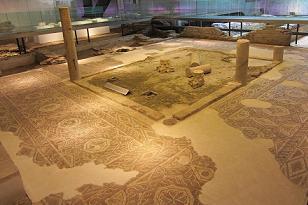
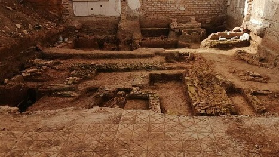

|
|
|
Se sabe que en el año 206 a.c., Escipión el Africano fundó Itálica a pocos kilómetros de Sevilla y en Almodóvar del Río se libro la batalla de Ilipa; tras la guerra púnica, Hispalis quedó arrasada por los cartagineses y su reconstrucción no comenzó hasta finales del siglo I o inicios del siglo II a.e.c. Hispalis no tenía la condición de colonia o municipio, hasta que en el 45 a.e.c. César concedió a la población el nuevo estatuto de Colonia, otorgando a los hispalenses la condición de ciudadanos romanos de pleno derecho. La leyenda dice que Julio César fundaría la ciudad, dándole el nombre de "Iulia Romula Hispalis": Julia por su propio nombre, Romula por Roma e Hispalis por estar edificada sobre postes clavados en el suelo. Otra leyenda dice que la ciudad fue fundada por Hércules. Actualmente por los restos arqueológicos encontrados, los arqueólogos han esbozado el trazado de la ciudad romana. Las dos vías principales corresponderían a las actuales calle Águilas y Alhóndiga, con el foro en la plaza de la Alfalfa. Bajo el palacio Arzobispal se hallaban unas termas, y los arqueólogos han descubierto una depresión que bien podía ser el teatro. Ya en el siglo XVII Rodrigo Caro decía: “Aunque en Sevilla hubo grandes y suntuosos templos, circos... y anfiteatros.... todo ha desaparecido”. En el subsuelo del mercado de la Encarnación se localiza el yacimiento arqueológico romano más importante de Sevilla, el Museo Antiquarium, con los restos de hasta siete casas. Se ha hallado varias casas con mosaicos de los siglos II, III y V de la Hispalis romana; una casa del siglo VI de la Ispali visigoda y una casa del siglo XIII de la Ishbiliyya almohade. De época romana también es la factoría de salazones del siglo I.
 Más restos de época romana como las columnas de la Alameda de Hércules o las de la calle Mármoles, la cisterna romana de la Plaza de la Pescadería, los restos del antiguo acueducto romano y los mosaicos y esculturas en la Casa de Pilatos y en la Casa de la Condesa de Lebrija. En julio de 2019, den la Florida, descubren un tramo de la Vía Heraclea por la que Julio César entró en Sevilla y un edifico comercial. En octubre de 2021, la aparición de la muralla romana resuelve el gran misterio arqueológico de Sevilla. La construcción del siglo III, cuyo trazado hasta ahora eran hipótesis, está frente al Ayuntamiento, a 2,10 metros bajo el suelo. En febrero de 2022, en el barrio sevillano del Fontanal esconde una necrópolis romana. Se han encontrado restos de un ‘triclinium’, una estancia para banquetes funerarios, inusual en excavaciones anteriores. Data siglos I y II. Foto Diario de Sevilla.

En enero de 2026, se ha descubierto una compleja infraestructura hidráulica, incluyendo un sistema de canales navegables y un embarcadero que formaban parte del vital comercio marítimo de Híspalis. Ha aparecido en las obras del nuevo residencial del Grupo Abu en las antiguas naves de Santa Bárbara. Bajo una capa de limo los arqueólogos Florentino Pozo y Rosa Gil han descubierto los restos constructivos romanos del siglo I. Más info: La huella romana en Sevilla
|
| CIUDADES DE HISPANIA | MENÚ HISPANIA |